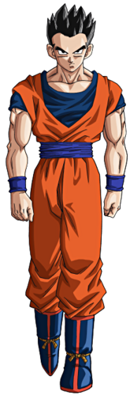

|  | Son Gohan (孫そん悟ご飯はん, Son Gohan), Son Gohanda[29] en su tiempo en España, o simplemente Gohan en Hispanoamérica, es uno de los personajes principales de los arcos argumentales de Dragon Ball Z , Dragon Ball Super y Dragon Ball GT. Es un mestizo entre saiyano y humano terrícola. Es el primer hijo de Son Goku y Chi-Chi, hermano mayor de Son Goten, esposo de Videl y padre de Pan. |